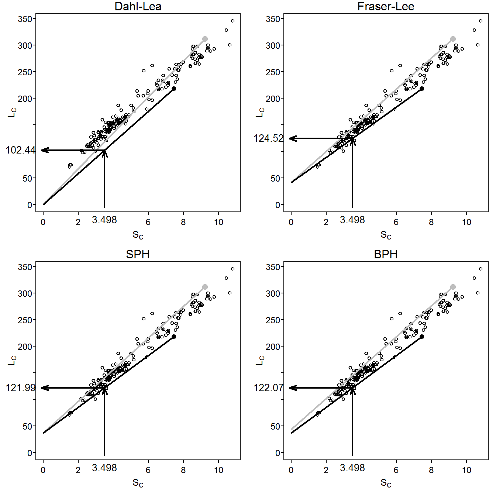

Francis (1990) defined back-calculation as “… a technique that uses a set of measurements made on a fish at one time to infer its length at an earlier time or times. Specifically, the dimensions of one or more marks in some hard part of the fish, together with its current body length, are used to estimate its length at the time of formation of each of the marks. … The marks are generally annual rings associated with growth checks, … .” Thus, backcalculation is the reconstruction of the length of a fish at previous ages from measurements made on calcified structures.
Functions used in this supplement require the packages shown below.
> library(FSA)
> library(magrittr)
> library(dplyr)
> library(tidyr)
> library(stringr)All analyses in this supplement use the West Bearskin Lake (MN) Smallmouth Bass (Micropterus dolomieu) data from Weisberg (1993) found in SMBassWB.csv (view, download, meta-data). The analysis in this supplement will focus on those fish captured in 1990. Three variables that were constant and not used in this analysis and three measurement variables that corresponded to ages that did not exist after reducing to only fish capted in 1990 were removed to save space.
> SMBassWB <- read.csv("SMBassWB.csv")> wb90 <- filterD(SMBassWB,yearcap==1990) %>%
select(-(species:gear),-(anu10:anu12))
Two types of measurements can be made on calcified structures. A radial measurement is the total distance from the center of the structure (e.g., focus of scale or nucleus of otolith) to the edge of an annulus. An incremental measurement is the distance between two successive annuli. Radial measurements are required for back-calculation of fish length.
Back-calculation models estimate length at previous age \(i\) (i.e., \(L_{i}\)) from known values of length at time of capture (\(L_{C}\)), scale radius to the \(i\)th annulus (\(S_{i}\)), and scale radius at time of capture (\(S_{C}\)). Several back-calculation models rely on the relationship between \(S_{C}\) and \(L_{C}\). Depending on the model, a function of mean \(S_{C}\) for a given \(L_{C}\) (i.e., \(E(S_{C}|L_{C})\) ) or mean \(L_{C}\) for a given \(S_{C}\) (i.e., \(E(L_{C}|S_{C})\)) is used. These functions are not required to be linear, but often are, and in their linear form are represented as
\[ E(S_{C}|L_{C})=a+bL_{C} \quad \quad \text{(1)} \]
\[ E(L_{C}|S_{C})=c+dS_{C} \quad \quad \text{(2)} \]
Fitting these regressions is demonstrated below.
The first back-calculation model was jointly developed by Knut Dahl and Einar Lea and appeared in Lea (1910). The underlying concept of the Dahl-Lea model is that growth of the calcified structure is in exact proportion to growth in length of the fish. With this, the ratio of \(S_{i}\) to \(S_{C}\) is the same as the ratio of \(L_{i}\) to \(L_{C}\). Rearrangement of this equality yields the Dahl-Lea back-calculation model
\[ L_{i}=\frac{S_{i}}{S_{C}}L_{C} \quad \quad \text{(3)} \]
The Dahl-Lea model describes a family of straight lines that pass through the origin and each observed (\(S_{C},L_{C}\)) point. Visually (Figure 1), the estimated \(L_{i}\) for a particular fish is found by locating \(S_{i}\) along the x-axis, moving vertically until the straight line for that fish is met, and then moving horizontally to the point on the y-axis.

Figure 1: Plot of length-at-capture versus scale radius for West Bearskin Lake Smallmouth Bass in 1990. All four methods of backcalculation are shown for fish 704 (\(S_{2}=3.49804\), \(L_{C}=218\), and \(S_{C}=7.44389\); black point and line) with calculational steps shown with the arrows. Fish 701 is shown as the gray point and line for comparative purposes.
Fraser (1916) was the first to describe, but Lee (1920) was the first to formally derive, the back-calculation model from the concept that “the growth increment of the scale is, on the average …, a constant proportion of the growth increment of the fish” (Francis 1990). In practice, the Fraser-Lee model modified the Dahl-Lea model by adjusting for the length of the fish when the calcified structure forms (i.e., \(L=c\) when \(S=0\)), that is,
\[ L_{i}=\frac{S_{i}}{S_{C}}(L_{C}-c)+c \quad \quad \text{(4)} \]
where \(c\) comes from the length of the fish at the time of scale formation, the intercept of the length-scale relationship regression (e.g., from Equation 2), or from published “standards” for a species (Carlander 1982). The Fraser-Lee model describes a family of lines with an intercept of \(c\) that pass through the (\(S_{C},L_{C}\)) point (Francis (1990); Figure 1).
The scale proportional hypothesis (SPH) model was named by Francis (1990), but was first recognized by Whitney and Carlander (1956) when they said “{i}f the scale was 10 per cent larger when the fish was caught than the average scale for that size of fish, [then] the scale would be 10 per cent larger than normal throughout the life.” If “average” and “normal” are considered to be expected values, then this hypothesis can be written as
\[ \frac{S_{i}}{E[S|L_{i}]}=\frac{S_{C}}{E[S|L_{C}]} \]
If it is assumed that the scale-length relationship is linear, then the two expected values in these ratios are computed by plugging \(L_{i}\) and \(L_{C}\), respectively, into the scale-length relationship (i.e., Equation 1) to produce
\[ \frac{S_{i}}{a+bL_{i}}=\frac{S_{C}}{a+bL_{C}} \]
which can be solved for \(L_{i}\) to yield the general SPH back-calculation model
\[ L_{i} = \frac{S_{i}}{S_{C}}\left(L_{C}+\frac{a}{b}\right) - \frac{a}{b} \quad \quad \text{(5)} \]
The linear SPH model produces a family of lines that all have an intercept of \(-\frac{a}{b}\) and pass through each observed (\(S_{C},L_{C}\)) point (Figure 1). The SPH model is the same as the Fraser-Lee model except that the intercept from Equation 2 is replaced with \(-\frac{a}{b}\). Further note that the SPH model is the same as the Dahl-Lea model if \(a=0\).
The body proportional hypothesis (BPH) model was also named by Francis (1990) and was also first recognized by Whitney and Carlander (1956) when they said “{i}f a fish at time of capture were 10 per cent smaller than the average fish with that size of scale, [then] the fish would be 10 per cent smaller than the expected length for the size of that scale throughout life.” This hypothesis can be written as
\[ \frac{L_{i}}{E[L|S_{i}]}=\frac{L_{C}}{E[L|S_{C}]} \]
If the length-scale relationship is linear then the expected values can be found by plugging \(S_{i}\) and \(S_{c}\) into Equation 2 to get
\[ \frac{L_{i}}{c+dS_{i}}=\frac{L_{C}}{c+dS_{C}} \]
which can be solved for \(L_{i}\) to yield the general BPH back-calculation model
\[ L_{i}=L_{C}\frac{c+dS_{i}}{c+dS_{c}} \quad \quad \text{(6)} \]
The linear BPH model produces a family of lines that have an intercept of \(\frac{cL_{C}}{c+dS_{C}}\) and pass through each observed (\(S_{C},L_{C}\)) point (Figure 1). In contrast to the other back-calculation models, the BPH model uses lines with a different intercept for each fish. The linear BPH model is the same as the Dahl-Lea model if \(c=0\).
Vigliola and Meekan (2009) described 18 other models for the back-calculation of fish length. Functions for each of these models can be created with bcFuns() from FSA.
In wide or one-fish-per-line format, all information about a single fish, including all of the measurements from the calcified structure, is in one row of the data.frame. The wb90 data.frame contains radial measurments in the wide format (note that the portion shown below has four rows with columns that wrapped).
> headtail(wb90,n=2) yearcap fish agecap lencap anu1 anu2 anu3 anu4 anu5 anu6
1 1990 482 1 75 1.51076 NA NA NA NA NA
2 1990 768 1 75 1.57989 NA NA NA NA NA
180 1990 388 9 300 1.08462 2.03527 3.22724 4.63407 5.53355 6.53174
181 1990 389 9 329 1.05913 2.18769 3.55137 4.40766 5.78634 7.58178
anu7 anu8 anu9 radcap
1 NA NA NA 1.51076
2 NA NA NA 1.57989
180 7.27807 8.08080 9.38096 9.38096
181 8.32094 9.46362 10.43491 10.43491For the back-calculation of fish length, these data must be radial, and not incremental, measurements. If the wb90 data.frame had contained incremental measurements, then it could be converted to radial measurements with gConvert() from FSA. The gConvert() function requires the data frame with the incremental measurements as the first argument, the prefix (in quotes) for the columns that contain the incremental measurements in in.pre=, and the type of measurement to convert to in out.type= (the options are "rad" (the default) or "inc"). For example, the code below would create a new data.frame from wb90 with radial measurements (IF wb90 had incremental measurements).
> wb90A <- gConvert(wb90,in.pre="anu",out.type="rad")For efficient back-calculation, the data must also be converted to long or one-measurement-per-line format. As demonstrated in the IFAR book, wide data may be converted to long data with gather() from tidyr. As a reminder, the arguments to gather() are the wide data.frame, a name for the new variable in the long format that will identify the individual (i.e., which radial measurement), a name for the new variable in the long format that will be the value for the individual (i.e., the radial measurement), and the variables in the wide format that contain the measurements.
> wb90r <- gather(wb90,agei,radi,anu1:anu9) %>%
arrange(fish,agei)
> headtail(wb90r) yearcap fish agecap lencap radcap agei radi
1 1990 0 7 278 9.06803 anu1 1.50631
2 1990 0 7 278 9.06803 anu2 3.11450
3 1990 0 7 278 9.06803 anu3 4.51154
1627 1990 998 7 298 8.54805 anu7 8.54805
1628 1990 998 7 298 8.54805 anu8 NA
1629 1990 998 7 298 8.54805 anu9 NAAs noted in the IFAR book, there are three potential problems with this result. First, the new agei variable contains the names of the variables from the original wide format data.frame (e.g., anu1, anu2) rather than numbers that correspond to the age that the annulus was formed. Converting these labels to numbers begins by replacing the “anu” prefix with blanks (or an empty string) using str_sub() with the vector of names as the first argument, start=1 (because “anu” is a prefix) and end=3 (because “anu” is three characters long). The result from str_sub(), however, is a character that must then be converted to a numeric with as.numeric().
The second problem is that several of the radial measurements contain NA values. The non-NA values are found and retained by using !is.na() within filterD().
The third problem, while not an issue with these particular data, is that “plus growth” may have been recorded. “Plus growth” is growth on the margin of the calcified structure that does not represent a complete year of growth. If “plus growth” is present, then the new agei variable will have a value greater than the age-at-capture value. These instances should be removed from the new long format data.frame.
The following code adjusts for these three issues.
> str_sub(wb90r$agei,start=1,end=3) <- ""
> wb90r %<>% mutate(agei=as.numeric(agei)) %>%
filterD(!is.na(radi)) %>%
filterD(agei<=agecap)
> headtail(wb90r) yearcap fish agecap lencap radcap agei radi
1 1990 0 7 278 9.06803 1 1.50631
2 1990 0 7 278 9.06803 2 3.11450
3 1990 0 7 278 9.06803 3 4.51154
765 1990 998 7 298 8.54805 5 5.17646
766 1990 998 7 298 8.54805 6 6.62240
767 1990 998 7 298 8.54805 7 8.54805
The scale-length (Equation 1) and length-scale (Equation 2) relationships required for all but the Dahl-Lea method are computed with the wide format data. Thus, the wide format data.frame must contain the length of the fish (e.g., lencap) and the total radius of the calcified structure (e.g., radcap) at the time of capture. Both linear relationships are fit with lm() and the coefficients should be extracted with coef() and saved into objects.
> lm.sl <- lm(radcap~lencap,data=wb90)
> ( a <- coef(lm.sl)[[1]] )[1] -1.304391> ( b <- coef(lm.sl)[[2]] )[1] 0.03537477> lm.ls <- lm(lencap~radcap,data=wb90)
> ( c <- coef(lm.ls)[[1]] )[1] 41.65166> ( d <- coef(lm.ls)[[2]] )[1] 27.35597The \(L_{i}\) estimated with a back-calculation model are most easily added to the long format data.frame. This is largely an exercise in adding a variable to the data.frame with mutate() from dplyr. For example, the \(L_{i}\) computed with all four back-calculation models are added to wb90r below.
> wb90r %<>% mutate(DL.len=(radi/radcap)*lencap,
FL.len=(radi/radcap)*(lencap-c)+c,
SPH.len=(-a/b)+(lencap+a/b)*(radi/radcap),
BPH.len=lencap*(c+d*radi)/(c+d*radcap))
> headtail(wb90r,n=2) yearcap fish agecap lencap radcap agei radi DL.len FL.len
1 1990 0 7 278 9.06803 1 1.50631 46.17918 80.91199
2 1990 0 7 278 9.06803 2 3.11450 95.48171 122.82772
766 1990 998 7 298 8.54805 6 6.62240 230.86847 240.25149
767 1990 998 7 298 8.54805 7 8.54805 298.00000 298.00000
SPH.len BPH.len
1 76.92752 79.50736
2 119.69064 121.72181
766 239.17509 241.01809
767 298.00000 298.00000For example, the mean length-at-age may be computed from the back-calculated lengths (shown below for the Fraser-Lee results).
> tmp <- wb90r %>%
group_by(agei) %>%
summarize(n=validn(FL.len),mn=mean(FL.len),sd=sd(FL.len)) %>%
as.data.frame()
> tmp agei n mn sd
1 1 181 78.5663 6.472692
2 2 178 114.1527 10.453632
3 3 155 146.7669 13.898434
4 4 71 172.6512 15.339848
5 5 64 201.0405 17.479717
6 6 64 235.3834 23.350527
7 7 50 268.5969 25.286958
8 8 2 283.2237 26.912010
9 9 2 314.5000 20.506097Additionally, the mean length at each back-calculated age computed separately for each age-at-capture may be computed with sumTable() from FSA, where the left side of the formula is the quantitative variable to be summarized and the right side has grouping variables presented in row*column format.
> sumTable(FL.len~agecap*agei,data=wb90r,digits=1) 1 2 3 4 5 6 7 8 9
1 73.7 NA NA NA NA NA NA NA NA
2 79.7 113.3 NA NA NA NA NA NA NA
3 77.3 112.8 148.9 NA NA NA NA NA NA
4 71.3 121.8 160.9 194.0 NA NA NA NA NA
6 79.8 107.9 136.0 169.6 198.8 229.7 NA NA NA
7 81.6 118.2 144.7 170.7 201.8 237.0 269.1 NA NA
9 71.2 99.8 135.0 166.1 197.5 236.0 256.4 283.2 314.5Carlander, K. D. 1982. Standard intercepts for calculating lengths from scale measurements for some centrarchid and percid fishes. Transactions of the American Fisheries Society 111:332–336.
Francis, R. I. C. C. 1990. Back-calculation of fish length: A critical review. Journal of Fish Biology 36:883–902.
Fraser, C. M. 1916. Growth of the spring salmon. Transactions of the Pacific Fisheries Society 1915:29–39.
Lea, E. 1910. On the methods used in the Herring-investigations. Publ. Circonst. Cons. perm. int. Explor. Mer 108(1):14–22.
Lee, R. M. 1920. A review of the methods of age and growth determination in fishes by means of scales. Fisheries Investigations, London Series 2 4((2)):1–32.
Vigliola, L., and M. G. Meekan. 2009. The back-calculation of fish growth from otoliths. Pages 174–211 in B. S. Green, B. D. Mapstone, G. Carlos, and G. A. Begg, editors. Tropical Fish Otoliths: Information for Assessment, Management, and Ecology. Springer.
Weisberg, S. 1993. Using hard-part increment data to estimate age and environmental effects. Canadian Journal of Fisheries and Aquatic Sciences 50(6):1229–1237.
Whitney, R. R., and K. D. Carlander. 1956. Interpretation of body-scale regression for computing body length of fish. Journal of Wildlife Management 20:21–27.